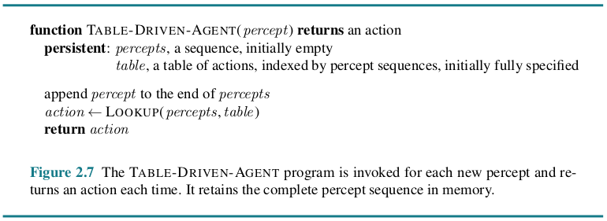

Chapter 2 Intelligent Agents¶
2.1 Agents and Environments¶
An agent is anything that can be viewed as perceiving its environment through sensors and acting upon that environment through actuators.
We use the term percept to refer to the content an agent’s sensors are perceiving. An agent’s percept sequence is the complete history of everything the agent has ever perceived. In general, an agent’s choice of action at any given instant can depend on its built-in knowledge and on the entire percept sequence observed to date, but not on anything it hasn’t perceived. Mathematically speaking, we say that an agent’s behavior is described by the agent function that maps any given percept sequence to an action.
Internally, the agent function for an artificial agent will be implemented by an agent program. It is important to keep these two ideas distinct. The agent function is an abstract mathematical description; the agent program is a concrete implementation, running within some physical system.
2.2 Good Behavior: The Concept of Rationality¶
A rational agent is one that does the right thing.
2.2.1 Performance measures¶
Moral philosophy has developed several different notions of the “right thing,” but AI has generally stuck to one notion called consequentialism: we evaluate an agent’s behavior by its consequences.
This notion of desirability is captured by a performance measure that evaluates any given sequence of environment states.
2.2.2 Rationality¶
What is rational at any given time depends on four things:
The performance measure that defines the criterion of success.
The agent’s prior knowledge of the environment.
The actions that the agent can perform.
The agent’s percept sequence to date.
Definition of a rational agent: For each possible percept sequence, a rational agent should select an action that is expected to maximize its performance measure, given the evidence provided by the percept sequence and whatever built-in knowledge the agent has.
2.2.3 Omniscience, learning, and autonomy
We need to be careful to distinguish between rationality and omniscience. An omniscient agent knows the actual outcome of its actions and can act accordingly; but omniscience is impossible in reality.
Rationality maximizes expected performance, while perfection maximizes actual performance.
Doing actions in order to modify future percepts—sometimes called information gathering. Our definition requires a rational agent not only to gather information but also to learn as much as possible from what it perceives.
To the extent that an agent relies on the prior knowledge of its designer rather than on its own percepts and learning processes, we say that the agent lacks autonomy. A rational agent should be autonomous—it should learn what it can to compensate for partial or incorrect prior knowledge.
2.3 The Nature of Environments¶
2.3.1 Specifying the task environment¶
The task environment is composed of PEAS (Performance, Environment, Actuators, Sensors).
2.3.2 Properties of task environments¶
FULLY OBSERVABLE VS. PARTIALLY OBSERVABLE: If an agent’s sensors give it access to the complete state of the environment at each point in time, then we say that the task environment is fully observable. An environment might be partially observable because of noisy and inaccurate sensors or because parts of the state are simply missing from the sensor data. If the agent has no sensors at all then the environment is unobservable.
SINGLE-AGENT VS. MULTIAGENT: The agent-design problems in multiagent environments are often quite different from those in single-agent environments.
DETERMINISTIC VS. NONDETERMINISTIC: If the next state of the environment is completely determined by the current state and the action executed by the agent(s), then we say the environment is deterministic; otherwise, it is nondeterministic.
EPISODIC VS. SEQUENTIAL: In an episodic task environment, the agent’s experience is divided into atomic episodes. Crucially, the next episode does not depend on the actions taken in previous episodes. In sequential environments, on the other hand, the current decision could affect all future decisions.
STATIC VS. DYNAMIC: If the environment can change while an agent is deliberating, then we say the environment is dynamic for that agent; otherwise, it is static. If the environment itself does not change with the passage of time but the agent’s performance score does, then we say the environment is semidynamic.
DISCRETE VS. CONTINUOUS: The discrete/continuous distinction applies to the state of the environment, to the way time is handled, and to the percepts and actions of the agent.
KNOWN VS. UNKNOWN: In a known environment, the outcomes (or outcome probabilities if the environment is nondeterministic) for all actions are given. Obviously, if the environment is unknown, the agent will have to learn how it works in order to make good decisions.
The performance measure itself may be unknown, either because the designer is not sure how to write it down correctly or because the ultimate user—whose preferences matter—is not known. The hardest case is partially observable, multiagent, nondeterministic, sequential, dynamic, continuous, and unknown.
2.4 The Structure of Agents¶
The job of AI is to design an agent program that implements the agent function—the mapping from percepts to actions. We assume this program will run on some sort of computing device with physical sensors and actuators—we call this the agent architecture:
agent = architecture + program.
2.4.1 Agent programs¶
The daunting size of these tables means that (a) no physical agent in this universe will have the space to store the table; (b) the designer would not have time to create the table; and (c) no agent could ever learn all the right table entries from its experience.
The key challenge for AI is to find out how to write programs that, to the extent possible, produce rational behavior from a smallish program rather than from a vast table.
2.4.2 Simple reflex Agents¶
The simplest kind of agent is the simple reflex agent. These agents select actions on the basis of the current percept, ignoring the rest of the percept history.